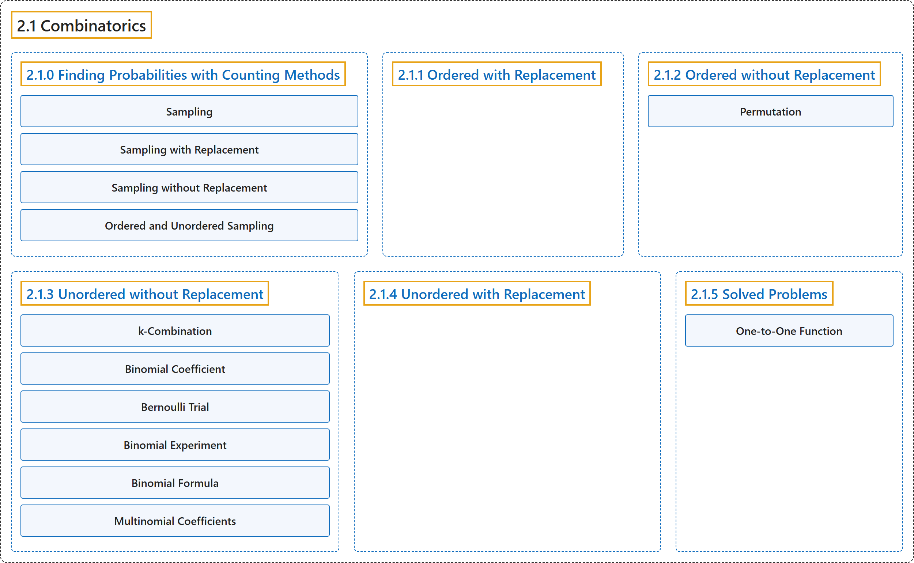

2.1 Combinatorics
Classification

Glossary
| Term | Definition | 中文翻译 | Source |
|---|---|---|---|
| 2.1 Combinatorics 组合 |
(No definition) | （无定义） | Pishro-Nik, 2014, section 2.1 |
| 2.1.0 Finding Probabilities with Counting Methods 用计数方法求概率 |
(No definition) | （无定义） | Pishro-Nik, 2014, section 2.1.0 |
| Sampling 抽样 |
"sampling from a set means choosing an element from that set. We often draw a sample at random from a given set in which each element of the set has equal chance of being chosen." | 从一个集合中抽样是指从该集合中选取一个元素。我们常从给定集合中随机抽取样本，集合中每个元素被选中的机会均等。 | Pishro-Nik, 2014, section 2.1.0 |
| Sampling with Replacement 有放回抽样 |
"If we put each object back after each draw, we call this sampling with replacement. In this case a single object can be possibly chosen multiple times." | 如果每次抽取后都把对象放回，我们称之为有放回抽样。此时同一个对象可能被多次选中。 | Pishro-Nik, 2014, section 2.1.0 |
| Sampling without Replacement 无放回抽样 |
"On the other hand, if repetition is not allowed, we call it sampling without replacement." | 另一方面，如果不允许重复，我们称之为无放回抽样。 | Pishro-Nik, 2014, section 2.1.0 |
| Ordered and Unordered Sampling 有序抽样与无序抽样 |
"If ordering matters (i.e.: \(a_1, a_2, a_3 \neq a_2, a_3, a_1\)), this is called ordered sampling. Otherwise, it is called unordered." | 如果顺序有影响（即 \(a_1, a_2, a_3 \neq a_2, a_3, a_1\)），则称为有序抽样；否则称为无序抽样。 | Pishro-Nik, 2014, section 2.1.0 |
| 2.1.1 Ordered with Replacement 有序有放回 |
(No definition) | （无定义） | Pishro-Nik, 2014, section 2.1.1 |
| 2.1.2 Ordered without Replacement 无放回的有序选取 |
(No definition) | （无定义） | Pishro-Nik, 2014, section 2.1.2 |
| Permutation 排列 |
"An \(n\)-permutation of \(n\) elements is just called a permutation of those elements." | \(n\) 个元素的 \(n\)-排列就简称为这些元素的排列。 | Pishro-Nik, 2014, section 2.1.2 |
| 2.1.3 Unordered without Replacement 无放回的无序选取 |
(No definition) | （无定义） | Pishro-Nik, 2014, section 2.1.3 |
| k-Combination k 组合 |
"Thus, we basically want to choose a \(k\)-element subset of \(A\), which we also call a \(k\)-combination of the set \(A\)." | 因此，我们基本上是要选出 \(A\) 的一个含 \(k\) 个元素的子集，也称为集合 \(A\) 的一个 \(k\)-组合。 | Pishro-Nik, 2014, section 2.1.3 |
| Binomial Coefficient 二项式系数 |
"\({n \choose k}\) is also called the binomial coefficient. This is because the coefficients in the binomial theorem are given by \({n \choose k}\)." | \({n \choose k}\) 也称为二项式系数。这是因为二项式定理中的系数由 \({n \choose k}\) 给出。 | Pishro-Nik, 2014, section 2.1.3 |
| Bernoulli Trial 伯努利试验 |
"A Bernoulli Trial is a random experiment that has two possible outcomes which we can label as "success" and "failure,"" | 伯努利试验是只有两种可能结果的随机试验，这两种结果可记为“成功”和“失败”。 | Pishro-Nik, 2014, section 2.1.3 |
| Binomial Experiment 二项试验 |
"If we have an experiment in which we perform \(n\) independent Bernoulli trials and count the total number of successes, we call it a binomial experiment." | 如果我们进行 \(n\) 次独立的伯努利试验并统计成功的总次数，就称其为二项试验。 | Pishro-Nik, 2014, section 2.1.3 |
| Binomial Formula 二项公式 |
"Binomial Formula: For \(n\) independent Bernoulli trials where each trial has success probability \(p\), the probability of \(k\) successes is given by \(P(k)={n \choose k}p^k(1-p)^{n-k}.\)" | 二项公式：对于 \(n\) 次独立的伯努利试验，每次试验的成功概率为 \(p\)，则 \(k\) 次成功的概率为 \(P(k)={n \choose k}p^k(1-p)^{n-k}.\) | Pishro-Nik, 2014, section 2.1.3 |
| Multinomial Coefficients 多项式系数 |
"The number of ways in this case is given by the multinomial coefficients. In particular, if \(n=n_1+n_2+...+n_r\), where all \(n_i\geq 0\) are integers, then the number of ways to divide \(n\) distinct objects to \(r\) distinct groups of sizes \(n_1, n_2,..., n_r\) is given by" | 此时的方法数由多项式系数给出。具体地说，若 \(n=n_1+n_2+...+n_r\)，其中所有 \(n_i\geq 0\) 均为整数，则把 \(n\) 个不同对象分成 \(r\) 个大小分别为 \(n_1, n_2,..., n_r\) 的不同组的方法数为 | Pishro-Nik, 2014, section 2.1.3 |
| 2.1.4 Unordered with Replacement 无序有放回 |
(No definition) | （无定义） | Pishro-Nik, 2014, section 2.1.4 |
| 2.1.5 Solved Problems 例题详解 |
(No definition) | （无定义） | Pishro-Nik, 2014, section 2.1.5 |
| One-to-One Function 一对一函数（单射） |
"A function is said to be one-to-one if for all \(x_1\neq x_2\), we have \(f(x_1)\neq f(x_2)\)." | 若对所有 \(x_1\neq x_2\) 都有 \(f(x_1)\neq f(x_2)\)，则称函数是一对一的（单射）。 | Pishro-Nik, 2014, section 2.1.5 |
References
Pishro-Nik, H. (2014). Introduction to probability, statistics, and random processes. Kappa Research. Retrieved October 28, 2026, from https://www.probabilitycourse.com/